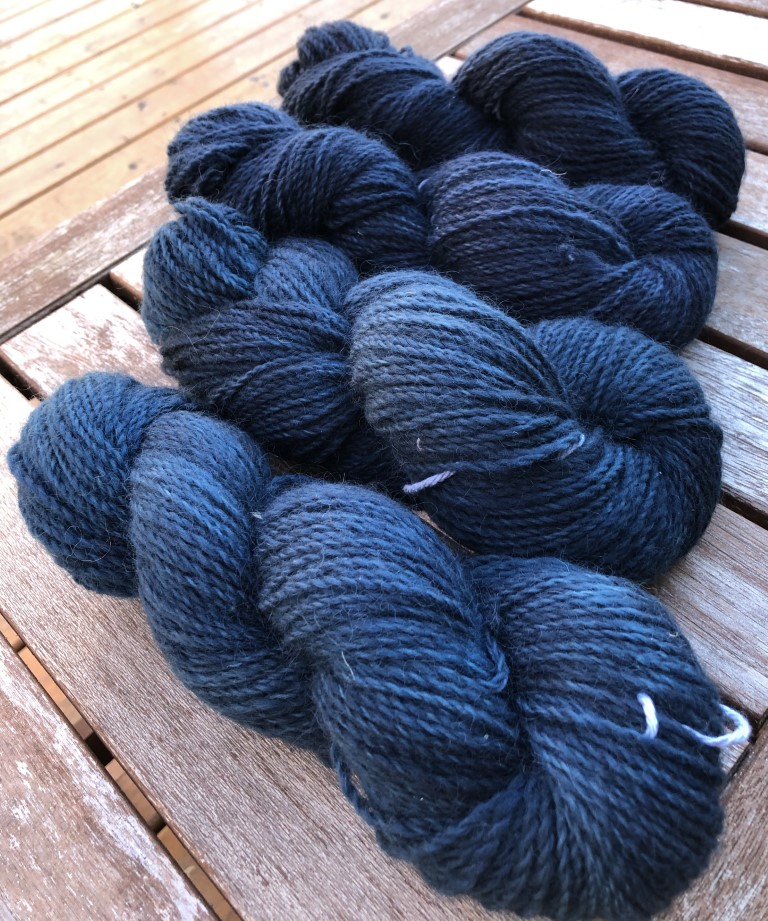
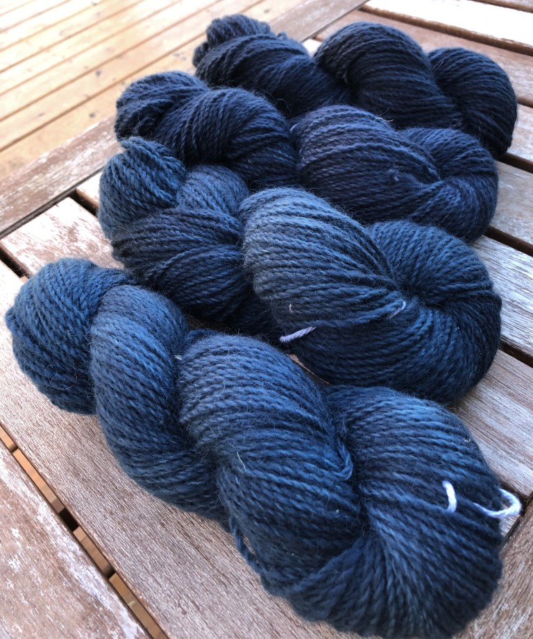

This dyeing process is called semi-solid or the vale dyeing method.
- First heat pot of water until close to boiling and soak your base yarn in hot water in a seperate container.
- While water is heating, mix your acid dye powder with water to create dye stock. Be sure to wear your face mask while handling the dye powder. Start with a small amount of powder and increase as desired.
- Once water is hot, add in dye stock and mix. Add your skiens of base yarn and mix gently, hooking out the cotton ties to dip the skeins in and out of the water to ensure even coverage.
- Push the skeins of to one side and pour in one third of second colour dye stock. Push the skeins of yarn into the dye. Repeat until second dye stock is used. Repeat process with a third colour if desired, and once again lift the skeins in and out of the dye to ensure they are evenly covered.
- Cover with a lid and let sit for 30 minutes, ensuring the pot does not boil.
- The water should be clear or close to clear at this point. You can either let the water and yarn cool to ensure you do not burn yourself or you can hook the dyed yarn out by the ties and rinse it. Be sure to rinse in water that is the same temperature as the yarn so you don't shock it as this may felt it.
- Squeeze or spin out water and hang to dry.
Enjoy!
 
